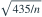
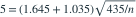

两独立正态总体方差分别为 43、392，各抽取 n 个样本。以  拒绝均值相等；要求均值差为 0 时第一类错误 0.05，均值差为 5 时第二类错误 0.15。取
拒绝均值相等；要求均值差为 0 时第一类错误 0.05，均值差为 5 时第二类错误 0.15。取  ，n 约为？
，n 约为？
拒绝均值相等；要求均值差为 0 时第一类错误 0.05，均值差为 5 时第二类错误 0.15。取 ，n 约为？- A95
- B145
- C165
- D125
我已思考，展开答案与解析
正确答案：D
- 均值差标准差为

。两误差条件给出
，解得 。
易错提醒先明确分布参数、独立性和统计量的定义，再进行计算。
用户提供练手卷 · 原第 5 题；题目 PDF 第 2 页
单选改编；题干与选项已重新编排